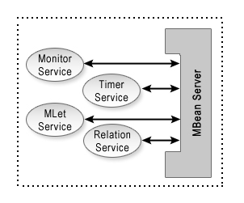

A JMX agent provides a set of services and each of these service is termed
an agent service. Generally, an agent service itself is implemented
as an MBean so that it can be accessed by other MBeans or management applications.

The following agent services are discussed in this section: